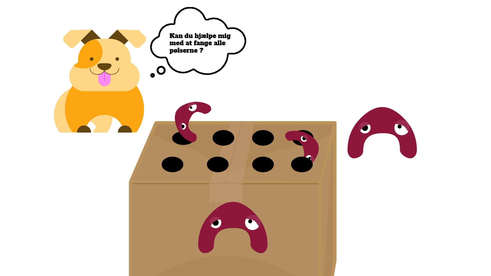
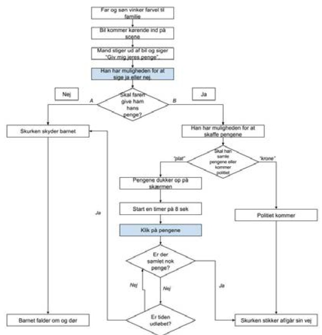

1 / 3

02.01.04 - Assetliste og designdokumentation
I denne opgave skulle jeg færdigøre mit spildesign, rentegne skærm- og ui-elementer og udarbejde et design-dokumentationssite.
2 / 3

03.03.04 - Animations-opgaven
I denne opgave skulle jeg færdigøre et interaktivt animeret spil. Her skulle jeg selv finde på en historie, handling og tegne al grafik, både figur-elementer, baggrund og UI-elementer